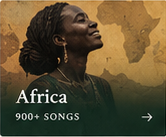
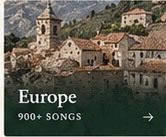
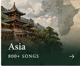
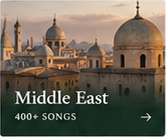
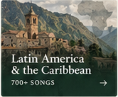

Explore the songs
A lifetime collection of world folk music gathered, researched, and arranged by choral director Chris Gaca. Every entry in this living archive preserves verified cultural context, field and reference performances, lyrics, and singer-tailored translations.

Jari ya Hamouda
Learned and curated by Chris Gaca as part of the World Music Chorus collection for North African repertoire.

Dilmano, Dilbero
Learned by Chris Gaca through Balkan music workshops and shared with the chorus.
Molih Ta
Chosen by Chris Gaca when the World Music Chorus was asked to perform at the Utica "Unspoken" Human Rights conference focusing on gender ...

Kangding Love Song
Learned by Chris and the chorus from Katrina Schell.
Pjevaj mi, pjevaj, sokole
Learned by Chris originally from Ethel Raim of the renowned Pennywhistlers during a workshop at East Hill Farm.
Zaspo Janko
Balkan favorite in Chris's repertoire. Chris notes that their chorus version differs slightly from the YouTube reference, retaining essen...
Leppiäinen
Introduced to the group from the repertoire of contemporary Finnish folk sensation Värttinä.
Suliko
A core lyric piece in Chris's international songbook.
Nach Re Mora
Contributed by a chorus member who remembered it from childhood in India.
Raghupati Raghav Raja Ram
Learned early in the chorus's journey; chorus member Sunithi Bajekal helped teach proper pronunciation and cultural nuance. Also noted as...

Dokhtare Boyer Ahmadi
Taught to Chris and the World Music Chorus in a workshop by Fereshteh Khosropour in December 2010.
Mastoom, Mastoom
Taught to the World Music Chorus group by Fereshteh Khosropour in December 2010 alongside Dokhtare Boyer Ahmadi.
Jovano, Jovanke
Longtime favorite in Chris's repertoire, updated in May/June 2022 with clean sheet music PDF and Word documents.
Što mi e milo
Learned by Chris during his Balkan Band days and rewritten in multiple choral versions. Chris was thrilled to re-discover it as a 7/8 dan...
Odunday
Learned by Chris from Bill and Livia Vanaver of The Vanaver Caravan during a World Music and Dance workshop at the Omega Institute in Jun...
Lab Pe Aati Hai Dua
Collected as a devotional and moral choral piece for interfaith and peace performances.

Son Borinqueño
Chorus member Lucia Sweetland heard this sung by the Community Choir in Syracuse, and the group tackled it to bring Latin American and Ca...
Ajde Jano
Much loved by Chris, the chorus, and international folk dancers. Chris notes the passionate theme: "Sell the house, sell the horse, sell ...
Šetnja
Learned by Chris from Steve Ellner to be used when performing for international folk dancers.
Ga Gona Ya Tswanang Le Jesu
Mary Yoder and Chris Gaca attended a Village Harmony workshop with Patty Cuyler, who taught them this song and its accompanying movements.
Abun d’Bashmayo
Included in the archive to preserve ancient liturgical and cultural vocal traditions from the Middle East.
Tevhid Etsin Dilimiz
Curated by Chris for the chorus's exploration of mystical Sufi vocal music.